Design a machine that folds a U.S. quarter in half — internal bend radius ≤ 0.25 mm, planarity within 5° — while minimizing coin disfiguration. My solution: a lever press with a Rolla-V (wing bend) die, whose oscillating rotors support the workpiece through the bend and cut friction and surface marking.
Starting from the coin's material properties (90-10 copper-nickel: 275 MPa UTS, 105 MPa yield, work-hardening), I compared a hand press + V die against a pneumatic press, then converged on a press machine with a wing bend V die — combining bending and flattening to 180 ± 5° in one modular setup. I sized the loads with beam-bending theory, validated the concept physically on an arbor press, and documented failure modes with fixes.
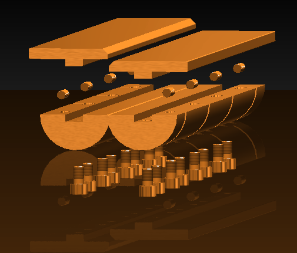
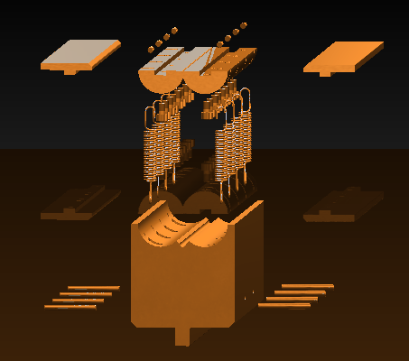
Unlike a standard V die, the Rolla-V's spring-loaded rotors rotate with the workpiece as it bends, keeping support under the material through the stroke. That reduces sliding friction and surface marking — exactly what the "minimal coin disfiguration" requirement demanded.
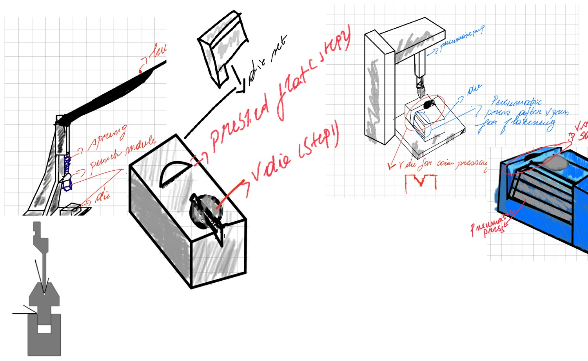
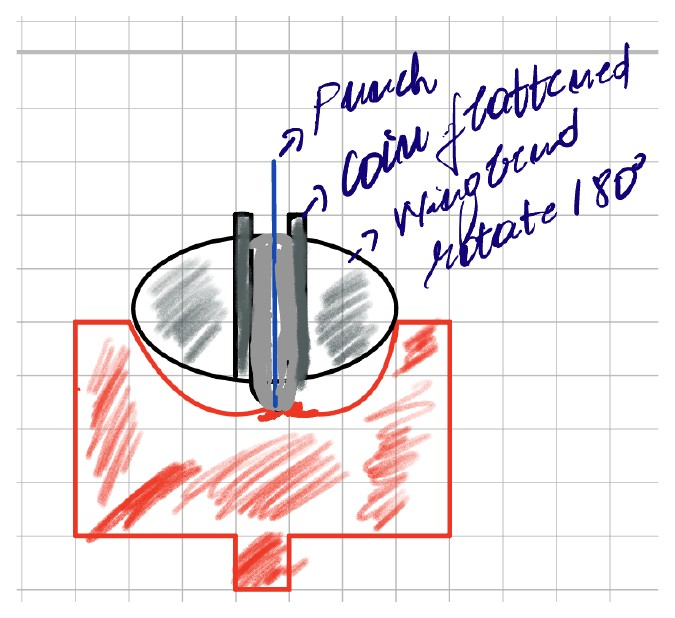
Concept A (hand press + V die) was simple and modular but operator-dependent; Concept B (pneumatic) gave repeatable load at higher cost and complexity. The chosen design modifies A with the wing bend die — controlled bending, low friction, and one setup for both pre-bend and flattening.
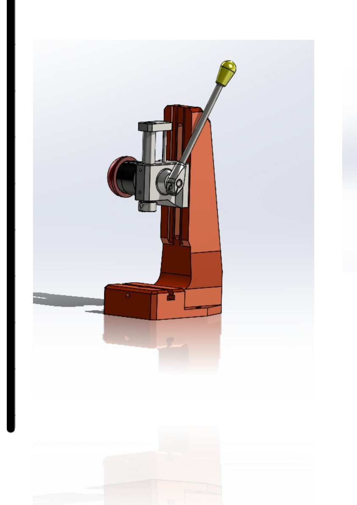
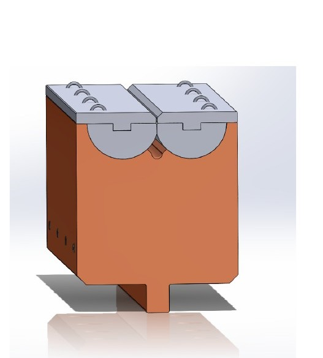
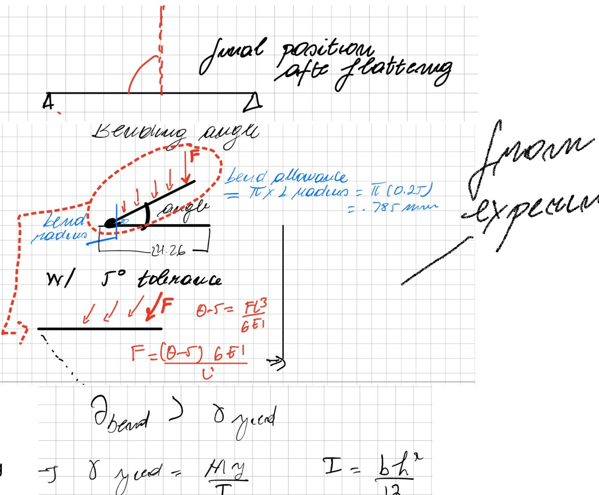
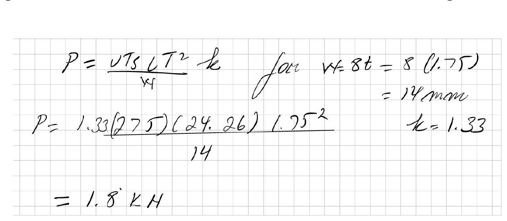
Modeling the quarter as a simply supported beam with a central load, I worked from yield (where plastic forming begins) toward UTS, accounted for CuNi's work-hardening, and computed the maximum bending force at ≈ 1.8 kN — the sizing basis for the press and die.
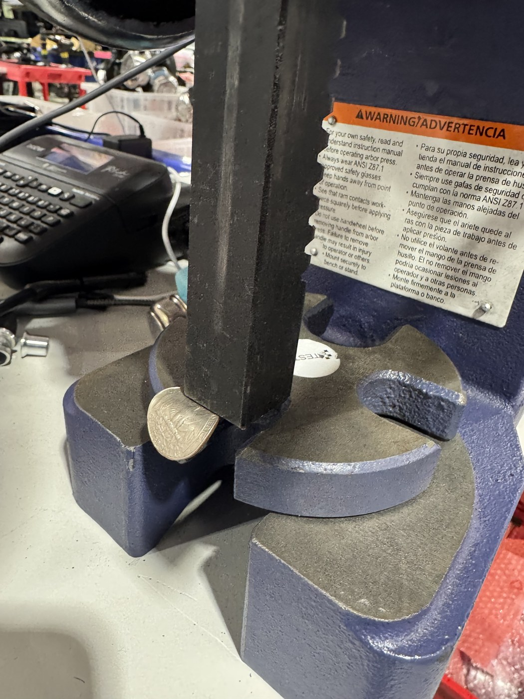
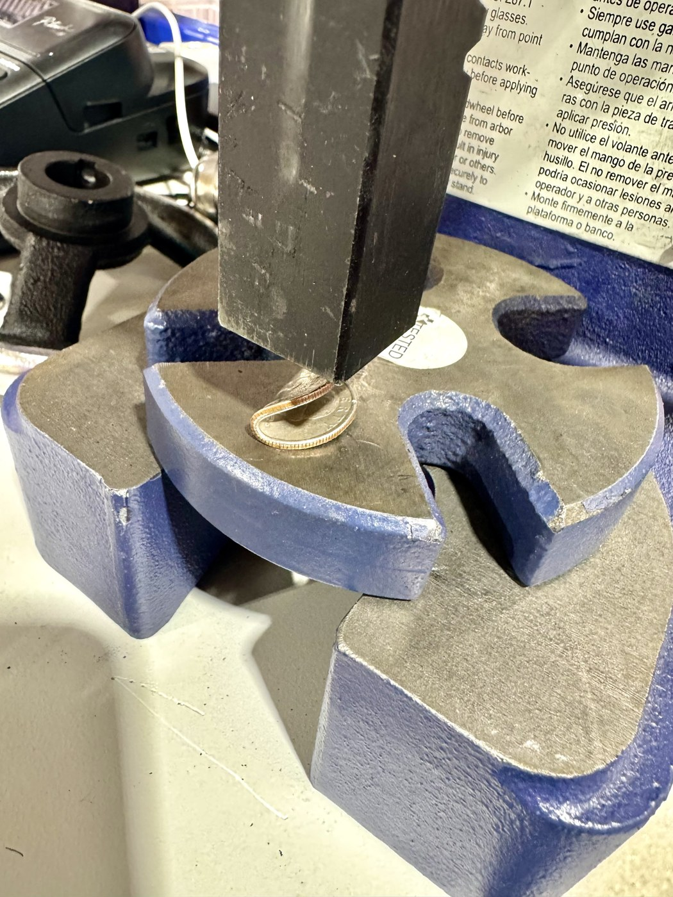
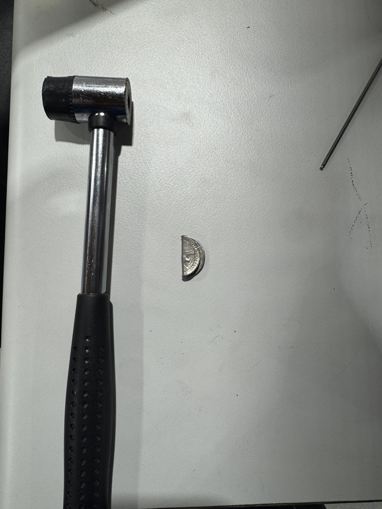
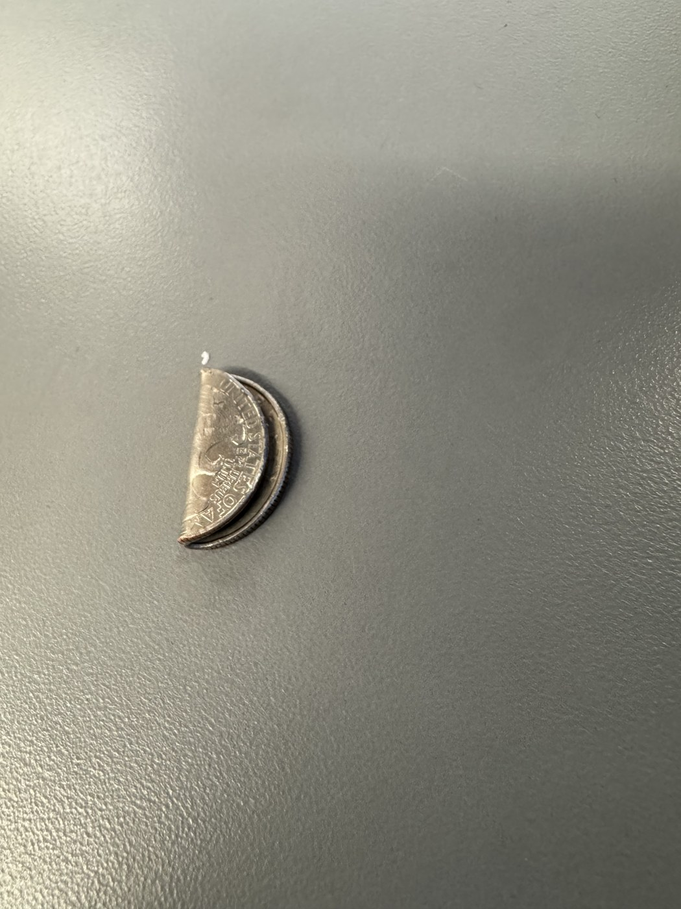
I validated the process physically with an arbor press and an improvised wiping-die setup: pre-bend to ~90°, then flatten. Observations — outer-radius warping, surface indentation, and much higher force at flattening — fed the failure analysis: anneal before bending, use the wing die to cut friction, and split bending/flattening into a two-step hemming-die process.